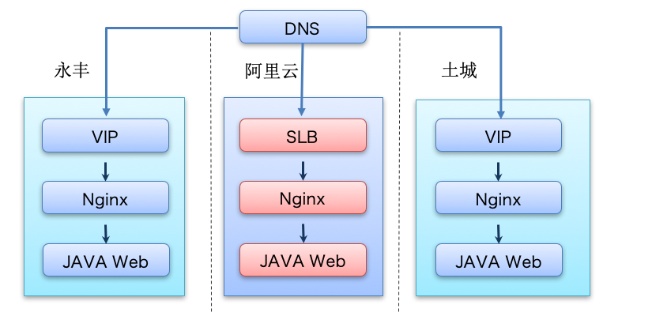
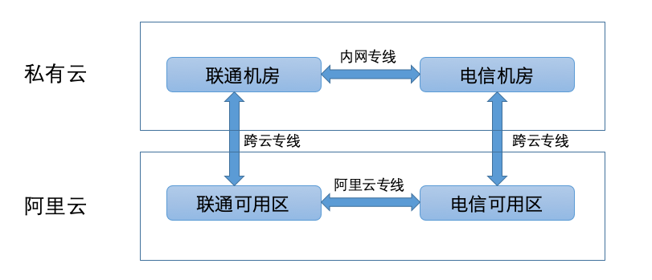
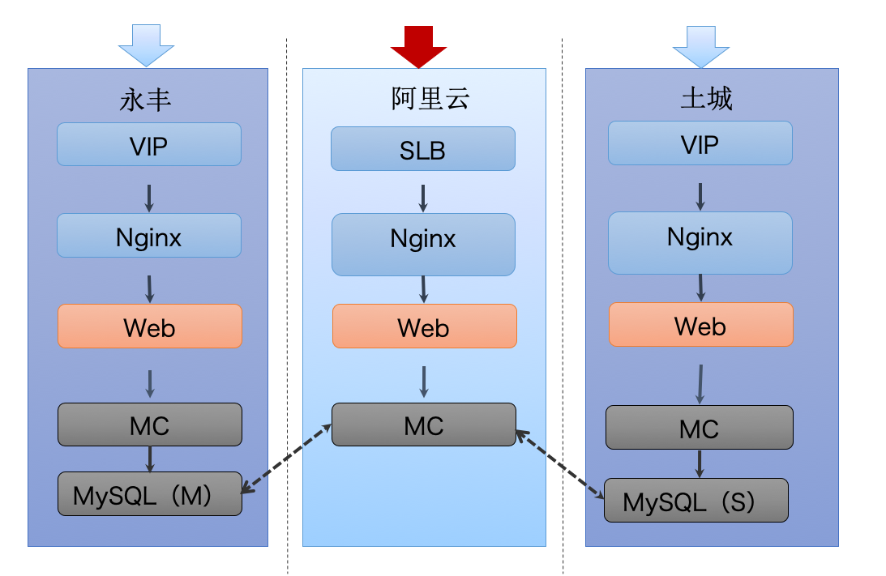
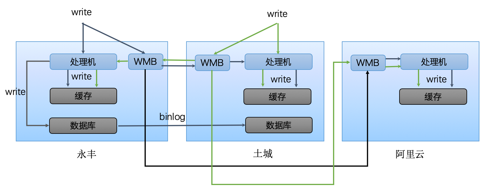
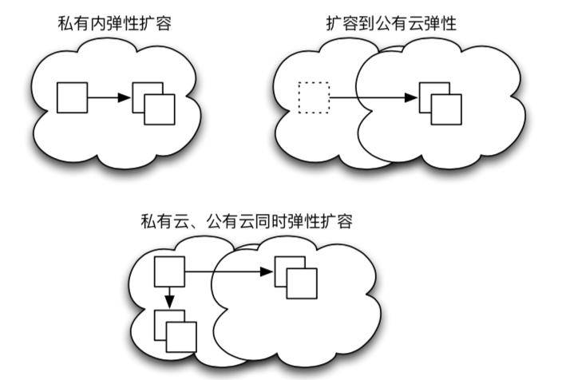
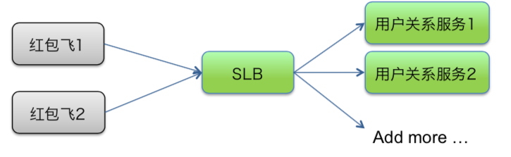
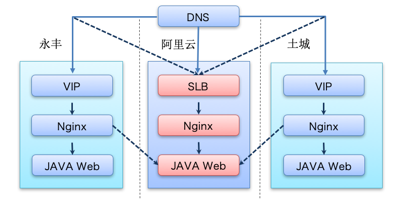
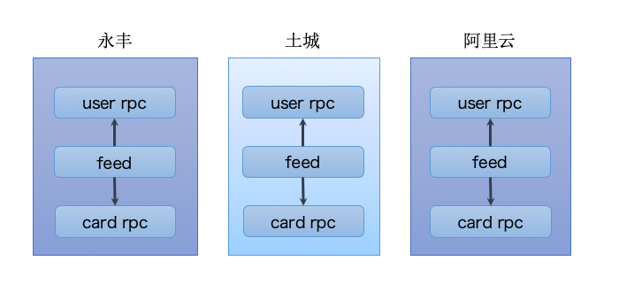

- 00 开篇词 微服务，从放弃到入门.md.html
- 01 到底什么是微服务？.md.html
- 02 从单体应用走向服务化.md.html
- 03 初探微服务架构.md.html
- 04 如何发布和引用服务？.md.html
- 05 如何注册和发现服务？.md.html
- 06 如何实现RPC远程服务调用？.md.html
- 07 如何监控微服务调用？.md.html
- 08 如何追踪微服务调用？.md.html
- 09 微服务治理的手段有哪些？.md.html
- 10 Dubbo框架里的微服务组件.md.html
- 11 服务发布和引用的实践.md.html
- 12 如何将注册中心落地？.md.html
- 13 开源服务注册中心如何选型？.md.html
- 14 开源RPC框架如何选型？.md.html
- 15 如何搭建一个可靠的监控系统？.md.html
- 16 如何搭建一套适合你的服务追踪系统？.md.html
- 17 如何识别服务节点是否存活？.md.html
- 18 如何使用负载均衡算法？.md.html
- 19 如何使用服务路由？.md.html
- 20 服务端出现故障时该如何应对？.md.html
- 21 服务调用失败时有哪些处理手段？.md.html
- 22 如何管理服务配置？.md.html
- 23 如何搭建微服务治理平台？.md.html
- 24 微服务架构该如何落地？.md.html
- 25 微服务为什么要容器化？.md.html
- 26 微服务容器化运维：镜像仓库和资源调度.md.html
- 27 微服务容器化运维：容器调度和服务编排.md.html
- 28 微服务容器化运维：微博容器运维平台DCP.md.html
- 29 微服务如何实现DevOps？.md.html
- 30 如何做好微服务容量规划？.md.html
- 31 微服务多机房部署实践.md.html
- 32 微服务混合云部署实践.md.html
- 33 下一代微服务架构Service Mesh.md.html
- 34 Istio：Service Mesh的代表产品.md.html
- 35 微博Service Mesh实践之路（上）.md.html
- 36 微博Service Mesh实践之路（下）.md.html
- 微博技术解密（上） 微博信息流是如何实现的？.md.html
- 微博技术解密（下）微博存储的那些事儿.md.html
- 结束语 微服务，从入门到精通.md.html
- 阿忠伯的特别放送 答疑解惑01.md.html
- 阿忠伯的特别放送 答疑解惑02.md.html
- 捐赠
32 微服务混合云部署实践
专栏上一期我给你讲解了微服务多机房部署的实践，以及需要解决的三个问题。大多数业务在发展到一定阶段，要么出于高可用性的需要，把业务部署在多个机房以防止单个机房故障导致整个服务不可用；要么出于访问量大的需要，把业务流量分散到多个机房以减少单个机房的流量压力。此时，服务一般是部署在企业内部机房的机器上，并利用私有云技术把内部机房的机器管理起来。然而有些业务经常还有弹性需求，比如微博就经常因为热点事件带来突发的峰值流量，需要扩容成倍的机器，但内部机房的资源有限，并且从成本因素考虑也不会预留太多机器，这个时候就会自然想到公有云。类似AWS和阿里云这样的公有云厂商，一般都会采购上万台机器，专门对外售卖，这样公有云的用户就不用预留这么多的机器了，可以按需弹性使用，节省机器成本。
我们今天要聊的混合云部署，就是既在企业内部的私有云部署服务，又使用企业外部公有云部署服务的模式。和多机房一样，混合云部署同样要考虑几个关键的问题。
跨云服务如何实现负载均衡？
跨云服务如何实现数据同步？
跨云服务如何实现容器运维？
下面我就结合微博的微服务混合云部署实践，帮你找到解决上面问题的答案。
跨云服务的负载均衡
上一期我们聊了多机房的负载均衡，它主要考虑用户的就近访问，把用户的请求分别路由到不同的机房。同样的道理，当服务上云后还需要考虑把一定比例的用户请求路由到云上部署的服务，就像下图那样，微博的服务不仅在私有云的两个机房永丰和土城有部署，在阿里云上也部署了服务。为了做到负载均衡，把用户的访问按照DNS解析到不同的机房，私有云机房部署了VIP和Nginx分别用作四层和七层的负载均衡，阿里云机房部署了SLB和Nginx分别用作四层和七层的负载均衡。

跨云服务的数据同步
复习一下上一期我给你讲解的多机房之间的数据同步。为了做到高可用性，一般采用独立机房的部署架构，每个机房的写请求都通过WMB同步给别的机房，以保证任意一个机房都有全量的写请求，从而使得任意一个机房的处理机都会全量更新数据。那么当服务跨云部署后，该如何实现数据同步呢？根据我的经验，在公有云部署服务和内部私有云部署服务还是有一些不同的，主要体现在下面两个方面。
1.私有云与公有云之间的网络隔离
一般来讲，出于安全的需要，企业内部机房同公有云机房之间的网络是隔离的，为了实现互通，需要架设专门的VPN网络或者专线，就像下图描述的，微博在内部私有云和阿里云之间搭建了两条跨云专线，分别打通了内部的联通、电信机房与阿里云的联通、电信可用区，这样的话不仅实现了私有云和公有云之间的网络互动，双专线也保证了高可用性，即使一条专线断了，也可以通过另外一条专线实现数据同步。不过这样做需要保证专线的冗余度充足，任何一根专线的带宽能够承担所有跨云的流量，否则就很危险了，因为一旦一根专线断了，所有流量都通过另外一根专线的话，就会把专线打满，出现网络延迟影响服务。

2.数据库能否上云
数据库能否上云的关键取决于数据的隐私性。一般而言，企业都会考虑数据库里的数据放在公有云上是否安全，因为企业内部私有云部署的数据库与外网隔离，再加上有种种防护措施，一般情况下不会出现数据库数据外泄情况。而公有云厂商普遍采用了虚拟化技术，不同公司的虚拟机有可能部署在同一台物理机上，所以能否实现有效的数据隔离非常关键，尤其对于企业的核心业务数据，往往会出于安全隐私的考虑，并不敢直接放到云上部署。考虑到这一点，微博的服务在阿里云部署时，并没有部署数据库，只部署了缓存，当缓存穿透时需要访问内网数据库，你可以参考下面这张图。

综合上面两点考虑，微博在做跨云数据同步的时候，把内部的永丰机房和土城机房的写消息通过WMB同步给阿里云机房的WMB，阿里云机房的WMB把写消息转发给阿里云机房的处理机处理，进而更新阿里云机房的缓存，整个流程可见下图。其中阿里云机房主要用于承担下行的读请求，部署的缓存也不是跟内网机房完全一致，而是只部署了最核心的服务所依赖的缓存，这样可以将大部分阿里云机房的请求都在内部消化，减少到内网数据库的穿透，从而节省跨云专线的带宽使用。

跨云服务的容器运维
前面我讲过，微服务容器化后，便具备了可移植性，不仅可以在内部私有云上部署，还可以在外部公有云上部署，这就要求有一套统一的容器运维平台不仅能对接内部私有云的基础设施，也能对接外部的公有云，这部分内容你可以在[第28期]容器运维平台DCP中找到。服务实现了混合云部署后，DCP在实施跨云的容器运维时又多了哪些关键点呢？
1.跨云的主机管理
跨云主机管理的关键点在于，如何对内部私有云的机器和公有云的ECS进行管理，在DCP里是按照“主机-服务池-集群”的模式进行管理的，这三个概念的含义分别是：
主机：某一台具体的服务器，可能是私有云内创建的虚拟机，也有可能是公有云创建的ECS。
服务池：针对具体某个服务而言，由这个服务部署的主机组成，可能包含私有云的主机，也可能包含公有云的主机，规模可能是几台也可能是上百台。
集群：针对具体某个业务线而言，可能包含多个服务池，比如微博的内容业务线包含了Feed服务池，也包含了评论服务池等。
在实际扩容时，如下图所示，可能有三种情况。
私有云内弹性扩容：当某个服务池的容量不足需要进行扩容时，如果该服务池所在的集群内的主机数量充足，则只需要在私有云内弹性扩容加入服务池即可。
公有云弹性扩容：当某个服务池的容量不足需要进行扩容时，如果该服务池所在的集群内没有多余的主机可用时，就需要在公有云上弹性扩容，然后加入服务池。
私有云和公有云同时弹性扩容：当某个服务池的容量不足需要进行扩容时，如果该服务池所在的集群内的主机数量不足时，就需要在同时在私有云和公有云上进行弹性扩容，最后都加入到服务池中去。

2.跨云服务发现。
在[第28期]我讲过DCP的服务发现主要有两种方式，一种是针对HTTP服务采用的nginx-upsync-module，一种是针对RPC服务的Config Service。除此之外，阿里云上部署的服务还可以直接使用SLB来做服务发现。比如下面这张图，红包飞依赖了用户关系服务，当阿里云上用户关系服务扩容后，可以直接添加容器的IP到SLB下，这样红包飞服务访问SLB就可以获得最新的用户关系服务的节点列表。

3.跨云弹性扩容。
当有流量上涨，超出了内部私有云机房部署所能承受的范围时，可以扩容阿里云机房的机器，然后把流量切换到阿里云机房，这个过程请看下面这张图。切流量也有两种方案：一是在DNS层切换，把原先解析到私有云机房VIP的流量，解析到阿里云机房的SLB，这时候阿里云机房部署的SLB、Nginx和Java Web都需要扩容；一种是在Nginx层切换，把原先转发到私有云机房Nginx的流量，转发到阿里云机房的Java Web，这个时候只需要扩容阿里云的Java Web。
这两种方案应对的业务场景不同，DNS层的切换主要是针对大规模流量增长的情况，这个时候一般四层VIP、七层Nginx和Java Web的容量都不足以应对，就需要在DNS层就把流量切到阿里云机房，在阿里云扩容SLB、Nginx和Java Web；而Nginx层的切换主要是针对私有云内某个机房的Java Web容量不足或者服务有问题的时候，需要把这个机房的一部分流量切换到其他机房，这个时候就可以只扩容阿里云机房的Java Web，然后从Nginx层把流量切换到阿里云机房。

4.跨云服务编排。
在进行服务编排时，如果服务跨云部署，就要考虑跨机房访问的问题了。就像下图所描述的那样，微博的Feed服务不仅依赖User RPC，还依赖Card RPC，这样的话如果Feed服务需要扩容的话，就需要先扩容User RPC和Card RPC。由于Feed服务在永丰、土城、阿里云三个机房内都有部署，任意一个机房内部署的Feed服务需要扩容时，就需要扩容同一个机房内的User RPC和Card RPC。

总结
今天我给你讲解了微服务混合云部署必须解决的三个问题：跨云服务的负载均衡、跨云服务的数据同步、跨云服务的容器运维，以及微博在微服务混合云部署时的实践方案，可以说正是由于采用了混合云部署，才解决了微博在面对频繁爆发的热点事件带来突发流量时，内部资源冗余度不足的问题。虽然云原生应用现在越来越流行，但对于大部分企业来说，完全脱离内部私有云并不现实，因为云也不是完全可靠的，一旦云厂商出现问题，如果没有内部私有云部署的话，那么服务将完全不可用。如果你的服务对高可用性要求很高，那么混合云的方案更加适合你。
思考题
微服务采用混合云部署的时候，如果公有云和私有云都都部署数据库的话，数据该如何保持同步？
欢迎你在留言区写下自己的思考，与我一起讨论。
© 2019 - 2023 Liangliang Lee. Powered by gin and hexo-theme-book.